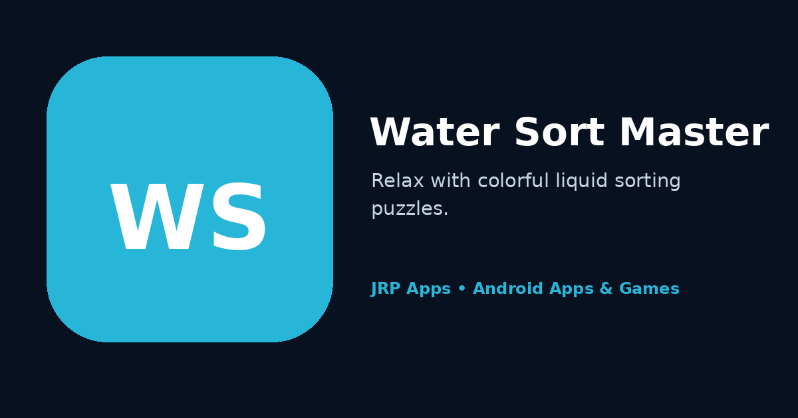

Water Sort Master transforms colour organisation into a clear logic challenge. Each puzzle begins with layered liquids distributed across tubes, and players must decide where each visible colour can be poured without trapping future moves. The goal is simple to recognise, but the order of pours becomes increasingly important as layouts grow more complex.
The game is designed to feel calm rather than rushed. Touch-based pouring, readable colours and clear movement feedback help players understand the current board. Because many layouts allow more than one possible approach, users can experiment, undo a poor sequence and develop a better plan. This makes the experience suitable for both quick relaxation and longer problem-solving sessions.
Players who enjoy sequencing can also try Arrow Escape, where direction and movement order determine the solution. Sudoku offers number-based deduction, while the planned ChessMaster experience focuses on strategic board decisions.
Features and Why They Matter
Classic colour-sorting rules. Players pour a visible colour into a compatible tube until each tube contains a matching set. The consistent rule keeps the game approachable while allowing layouts to create increasingly difficult decisions.
Progressively challenging layouts. Early puzzles help users understand legal pours and empty-space management. Later boards demand more planning because one convenient move can block the colours needed several steps later.
Multiple solution approaches. Many puzzles encourage experimentation rather than a single memorised path. Trying different sequences helps players understand the board, recover from mistakes and discover more efficient solutions.
Calm touch interactions. Pouring is designed to be easy to understand, with visual movement that confirms what changed. A relaxed presentation allows users to focus on colour order without unnecessary timers or interface noise in the core experience.
Flexible session length. Players can solve one board during a short pause or continue through several levels. This flexibility makes the game suitable for commuting, waiting and relaxed play at home.
Offline-friendly entertainment. Core puzzles are intended to remain useful without a continuous connection. Offline access gives players a dependable logic activity during travel or whenever network service is limited.
Who Should Use It
Water Sort Master is suitable for casual puzzle players, colour-sorting fans, children and adults practising planning, and anyone looking for a low-pressure mobile game. A new player can learn through direct experimentation, while an experienced player can work on crowded arrangements that require several moves of preparation.
Users who prefer thoughtful interaction over fast reflexes may find the game especially comfortable. Colour perception can vary, so players should use the clearest available device display settings and provide feedback if any visual distinction is difficult to recognise.
Privacy-First Data Handling
The game centres on self-contained single-player puzzles and does not require public sharing for ordinary play. Users can solve boards without maintaining a public identity or communicating with other players, supporting a more private and focused experience.
Water Sort Master aims to avoid permissions that are unrelated to its stated game functions. Core play is intended to remain useful offline, while installation, updates, support, advertising or optional online services may require connectivity. Product-specific information is published in the Water Sort Master privacy policy.
JRP Apps follows a privacy-first approach by limiting collection to what is reasonably needed for operation, security, support or optional features and by explaining those uses through accessible policies.
Fast, Lightweight Android Performance
Pour animations and touch response are designed to remain smooth so players can follow each colour movement. Lightweight screen structure supports fast startup, and efficient board updates reduce unnecessary work when a pour is made, undone or completed.
The responsive Material Design interface adapts to supported Android phones while maintaining readable tubes and accessible controls. Restrained animation and limited unnecessary background activity support battery-friendly play. Android 11 and later is the stated baseline, with testing focused on stable board state, animation clarity and dependable level progression.
Offline Use and Regular Updates
Core colour-sorting puzzles are intended to remain available offline after the relevant game content is installed. Internet access may still be required for installation, Play Store updates, support, advertising or optional connected features. Keeping the current release installed provides the latest compatibility, puzzle and stability improvements.
App Preview

Promotional preview for Water Sort Master, presenting a calm Android colour-sorting puzzle based on planning each pour.
Frequently Asked Questions
What is the goal in Water Sort Master?
The goal is to organise layered colours so each completed tube contains a single matching colour, using only legal pours and available space.
How do pours work?
A visible top colour can be poured into an empty tube or onto the same colour when space is available. Planning is needed to avoid blocking future moves.
Is Water Sort Master timed?
The core experience is presented as a calm logic puzzle, allowing players to consider moves rather than relying only on fast reactions.
Can the game be played offline?
Core puzzle play is intended to remain useful offline. Installation, updates, support, advertising or optional connected services may require internet access.
Does the game require an account?
Ordinary single-player puzzle use is designed not to require a public profile or social interaction.
Who is Water Sort Master for?
It suits casual players and puzzle fans who enjoy colour recognition, move sequencing, experimentation and low-pressure problem solving.
Which Android version is required?
The website lists Android 11 or later as the supported requirement, subject to device-specific information on Google Play.
How can I report a puzzle or display issue?
Contact support@jrphub.com with the level, device, Android version and a description of the colours or actions involved.
Related Apps and Games
For another sequencing challenge, play Arrow Escape. Sudoku replaces colours with number logic, and ChessMaster is planned for players who enjoy strategic board play.
Arrow EscapeA direction-based maze puzzle built around route planning.
Benefit: practise spatial reasoning in short mobile sessions.